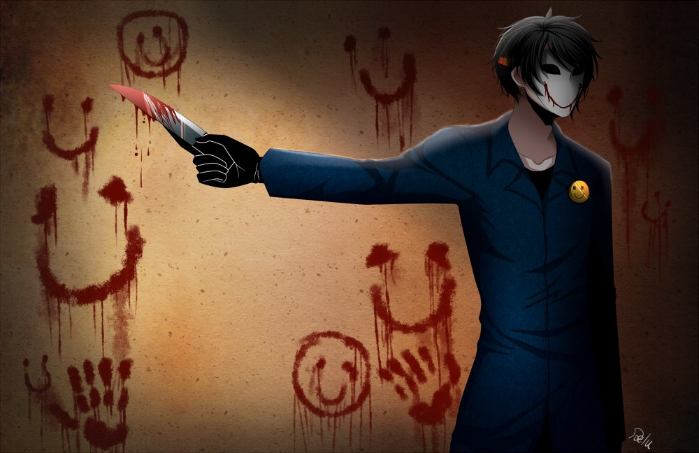
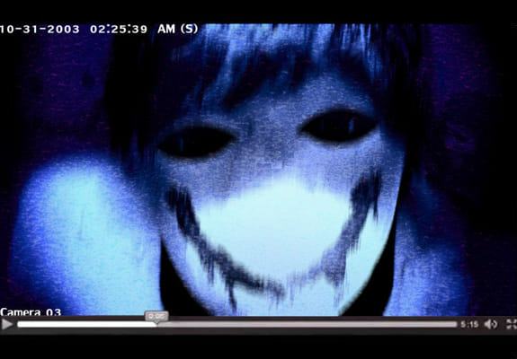

“No te entusiasmes por el mañana, porque no existe un mañana”.
- Frase célebre de Bloody Painter.
Helen Otis era un joven estudiante antisocial cuya única afición era dibujar. Fue acusado de haber robado el reloj de uno de sus compañeros, por lo que Helen se convirtió en una víctima de Bullying, algo que aparentemente no le importaba, pero en el fondo sentía un gran dolor y tristeza por ser constantemente humillado.
Él encontraría consuelo en su nuevo amigo Tom. Este último le confesó a Helen que fue él quien colocó el reloj en su bolso, para que toda la atención fuera dirigida hacia él y de ese modo liberarse del Bullying de los demás, esto provocó que Helen lo tirara de un tejado. Perdiendo la cordura al presenciar la muerte de quien creía era su amigo, Otis se dispondría a matar a todos sus compañeros de clase, volviéndose a partir de entonces un asesino letal, por lo que empieza a dejar como firma caras sonrientes en las paredes hechas con sangre.

Historia
Este es Helen, 14 años. Sus ojeras lo hacen ver como si nunca durmiera. No le importa mucho su desordenado cabello negro, ya que no le interesa poner demasiado esfuerzo en arreglarse; es innecesario.
Se sienta al final de la clase, junto a la ventana; él siempre se encuentra tranquilamente dibujando, es todo para él. No le gusta socializar con las personas, haciendo de él una persona solitaria. Hay una persona siendo empujada a la salida de la escuela. Ese es Tom, quién siempre es víctima de bullying, no porque alguna vez haya hecho algo, es solo que a la gente le desagrada. Estas cosas pasan a menudo, y Helen sabe de ello. A pesar de que se siente mal por Tom, no quiere interferir, ya que sería bastante molesto.
Durante el receso, Judy dijo que había perdido su reloj, así que comenzó a buscarlo. Helen no quería ayudarla, ya que no era de su interés. De repente, alguien vio algo que brillaba de la mochila de Helen.
-¿Qué es esto?- dijo Ban, mientras metía sus manos en la mochila, y sacaba un reloj adornado con diamantes falsos. Helen estaba muy sorprendido, ya que no tenía idea de cómo habría llegado eso ahí.
-¡Ah! ¡Ese es mi reloj!- Judy recibió el reloj de Ban, mientras veía la situación. Ambos observaron a Helen con una mirada extraña.
-No fui yo- dijo Helen, mientras seguía dibujando sin levantar la cabeza.
-Sí, claro- Judy dejó el salón junto con Ban.
Al día siguiente, como era usual, Helen estaba en su mesa dibujando. Él notó que la atmósfera a su alrededor no se sentía bien; las personas susurraban cosas sobre él, incluso algunos comenzaron a llamarlo “ladrón”. Decidió no excusarse, ya que sabe que es inútil hacerlo. A medida que el tiempo pasaba, Helen se convirtió en el nuevo blanco de bullying; todo lo que él hacía ahora era exagerado. No le gustaba, pero no se resistía. Mantenía ese sentimiento en su corazón, en silencio. Hasta que un día, Ban tomó el cuaderno con los infinitos dibujos de Helen sin terminar.
-Siempre haciendo estas cosas sin sentido- dijo Ban mientras agarraba unas cuantas páginas de su cuaderno y las rompía en muchos pedazos, esperando a ver la reacción de Helen.
En estos momentos, los sentimientos que había estado ocultando, estallaron. Golpeó a Ban en el rostro, y comenzó la pelea. Helen no era tan fuerte, por lo que fue golpeado. Otros estudiantes miraban la pelea, sin detenerlo, incluso había gente que le pisoteaba la cara y el estómago. Después de que sonará el timbre, todos se detuvieron y fueron a sentarse antes de que llegará la profesora. Helen regresó a su asiento, como si nada hubiese pasado. La profesora llegó un poco tarde.
-Oh por di... Otis Helen ¿Qué te pasó?.-
Helen tenía algunos golpes y cortes visibles así que su profesora lo notó apenas entró. Todos lo miraban con esa expresión asesina como diciendo, esperamos una buena respuesta.
-Me caí de las escaleras profesora - dijo Helen, mientras desaparecían las miradas - solo fue eso
Luego de llegar a casa después de la escuela, sus padres al ver sus condiciones decidieron preguntarle qué le había pasado, y respondió lo mismo. La chaqueta que estaba usando tenía algunos cortes parecidos a los de su cara. Sus padres le creyeron sin dudar. Usualmente cuando los padres de Helen le preguntaban por la escuela, él siempre decía que estaba bien. Incluso mentía diciendo que tenía muchos amigos, viviendo feliz cada día. Helen se negaba a decirle la verdad a sus padres, no quería hacer que se preocuparan por él. Unos meses más tarde, Helen ya se había acostumbrado a los comentarios negativos sobre él, a ser golpeado y humillado, ya se volvió algo normal, ya no le afectaban esas cosas. ¿Quién lo culpó en primer lugar? ¿Por qué querrían hacerlo el culpable de eso? Ya no importaba. Nada más importa ahora.
"¡Hola! ¿Estás ahí?"
Helen recibió un mensaje de un usuario desconocido en Facebook.
"¿Quién eres?"
"Soy Tom, tu compañero de clase"
Tom nunca había hablado con él antes, así que se sorprendió.
"¿Qué sucede?" escribió Helen.
"Um… ¿Te encuentras bien?" le preguntó Tom.
"No es de tu importancia" Concluyó Helen a la pregunta de Tom.
Tom chateó con él por un rato, hasta que le dijo:
"Mira, se que no te sientes bien. Estás en la misma situación que yo. Realmente quiero ayudarte, pero no puedo… Lo lamento".
Después de eso, Tom y Helen se hablaron durante un tiempo, Helen se sintió mejor contando todo el dolor y los sentimientos que tenía. Él incluso bromeaba con Tom usando “:)” para mostrar su felicidad. Esa era la primera vez que Helen había hecho un amigo.
Era una cálida tarde.
"Ven a verme en el techo después de que termine el primer periodo. Necesitamos hablar. No preguntes." envió Tom la noche anterior.
Siguiendo sus instrucciones, Helen fue a ver a Tom en el techo, saludando y caminando hacía él dijjo:
-¡Hey Tom! ¿Qué pasa amigo?-
-Um...tengo que decirte algo….algo importante..- dijo Tom con una expresión seria-¿Recuerdas el incidente del reloj robado?-
¿Cómo Helen iba a olvidarlo? Ese fue el inicio de su sufrimiento. Helen asiente.
-¡Yo fui el culpable!- Tom miró hacia abajo, asustado de mirar a Helen.
-¡¿QUÉ?!- Helen estaba sorprendido
-Robé el reloj de Judy y te culpé.
-¿Por qué hiciste eso?
-Con un nuevo blanco de víctima, mi vida es mucho mejor- Tom sonrió.
Era verdad que cuando todo el mundo decidió hacerle bullying a Helen, no volvieron a molestar a Tom. Era como un juguete abandonado. Para él era totalmente perfecto. Siempre y cuando estuviera en silencio sería capaz de vivir su vida escolar sano y salvo. Tuvo éxito, el plan era increíblemente perfecto. Helen agarró el cuello de su camisa, y, después le dio un pequeño empujón, que hizo que terminara cerca del borde. Tom se resbaló y se cayó del techo. Helen lo agarró al instante, y trató de tirarlo hacia arriba, pero no tenía la suficiente fuerza.
-Lo siento mucho, Helen-
Tom cayó. Helen cerró sus ojos, asustado de mirar lo que iba a suceder. No podía imaginar lo que sucedería después de caer de 6 pisos de altura... La policía llegó, interrogaron a Helen. Estaba demasiado horrorizado por el accidente, y no pudo decir ni una palabra. Una vez más, Helen se convertía en el tema de discusión de los estudiantes. Algunos pensaban que Helen había empujado a Tom desde el techo, pero la mayoría pensaban que Tom se suicidó, y Helen no pudo salvarlo, ya que lo habían visto agarrando la mano de Tom antes de caer.
Esa noche Helen se encontraba en su cuarto llorando, temblando, no podía sacar la culpa de su interior. Necesitaba calmarse y de repente un pensamiento se cruzó en su mente: "No es mi culpa que Tom haya muerto. ¡Merecía morir!". Esto hizo que se sintiera mucho mejor, y que su culpabilidad se desvaneciera. Helen sonrió espeluznante mente, "Tom ha tenido su castigo...Supongo que es hora de que los otros tengan el suyo, ¿no?" Su llanto se convirtió en una sonrisa cubierta por la oscuridad y su sed de venganza.
Los compañeros de Helen decidieron tener una fiesta de Halloween, pero no para celebrar Halloween, sólo para tener una fiesta. Como siempre, Helen había sido invitado a la fiesta. La noche antes de Halloween, Judy y Maggie se estaban enviando mensajes en Facebook. Ambas vivían en la residencia de estudiantes de la escuela, y la habitación de Judy estaba al lado de la de Maggie.
09:03 - Judy: ¿quién vendrá mañana a la fiesta? Estoy muy emocionada :D
09:03 - Maggie: la mayoría de nuestra clase estará ahí. Pero le mande muchos mensajes a Ban, y todos los mensajes que envié fueron leídos, pero nunca me contesta, que demonios está mal con él?
09:04 - Judy: probablemente esté trabajando, supongo
09:06 - Maggie: algo raro está pasando… he estado escuchando pasos viniendo de mi puerta por un largo tiempo… creo que alguien está caminando alrededor del dormitorio
09:06 - Maggie: espera, iré a ver
Usando la mirilla de la puerta Maggie vio algo inusual...
09:07 - Maggie: ¡oh dios! Hay un tipo afuera con una máscara y una chaqueta azul, tiene un cuchillo y ESTA CON SANGRE—
09:07 - Maggie: mie*da! Esta golpeando mi puerta —
09:08 - Maggie: oh dios oh dios oh dios!!!
09:08 - Judy: cálmate! y encuentra un arma o algo!—
09:08 - Judy: solo protégete!
09:09 - Maggie: giró el pomo de la puerta, que bueno que puse llave...—
09:09 - Maggie: tengo miedo!
09:09 - Judy
09:09 - Maggie: que debo hacer?!
09:09 - Judy: Maggie, escucha
09:09 - Maggie: SÁLVAME!
09:09 - Judy: Maggie, cálmate—
09:09 - Judy: Maggie—
09:10 - Judy: Maggie?
Se muestra que el mensaje ha sido leído, pero Judy simplemente no obtiene respuesta de Maggie. De repente oye el sonido de su puerta abriéndose. Se da vuelta, y siente un terrible dolor en el estómago. Una persona con sangre en su máscara y una chaqueta azul irrumpió en su habitación y la apuñaló.
Esa noche, todos los estudiantes que se encontraban en la residencia fueron asesinados. Nadie sabe cómo lo hizo. El asesino usó la sangre de las víctimas para pintar en las paredes de la residencia de estudiantes ":)" .Muchos de los cadáveres estaban mutilados y triturados, posiblemente para conseguir más "pigmentos". Helen Otis, el culpable, sigue desaparecido. Sin embargo, en el chat donde Judy y Maggie estuvieron hablando, un mensaje fue escrito, respondiendo al primer mensaje de Judy a las 09:03:
11:15 - Judy: no estés emocionada por mañana :) porque no habrá un mañana”.
